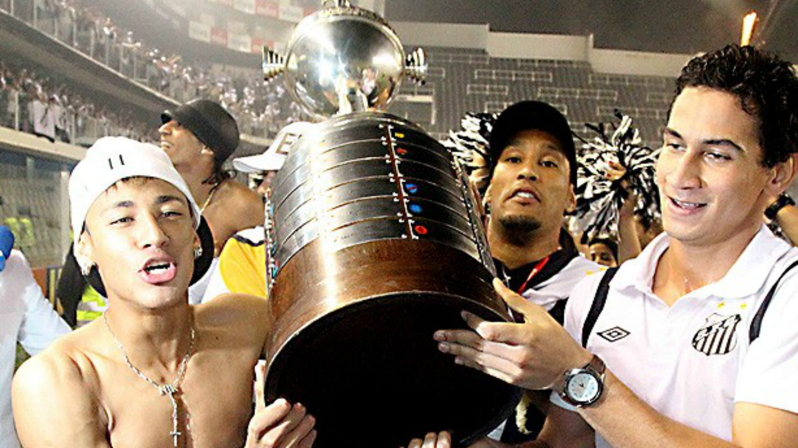
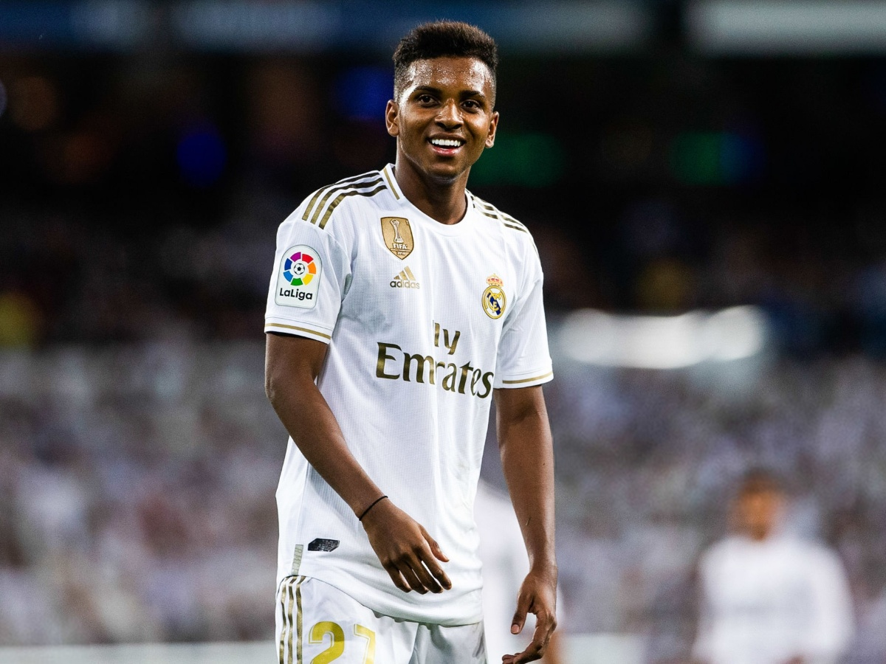

O único time que parou uma guerra

BI CAMPEÃO DO MUNDO
Na noite de sábado, 16 de novembro de 1963, o Maracanã repleto de torcedores transformou o Santos no primeiro bicampeão mundial de futebol. O lateral Dalmo marcou de pênalti o único gol do terceiro e último jogo da disputa pelo inédito título contra a Milan.

TRI CAMPEÃO DA LIBERTADORES
Tricampeonato do Santos na Libertadores completa dez anos! Há exatos dez anos, o Santos vencia o Peñarol por 2 a 1 no Pacaembu completamente lotado, inclusive com a presença do Rei Pelé, e conquistava o tricampeonato da Copa Libertadores da América.

CLUBE QUE REVELOU GRANDES CRAQUES
Rodrygo Silva de Goes, mais conhecido apenas como Rodrygo, é um futebolista brasileiro que atua como atacante. Atualmente joga no Real Madrid.